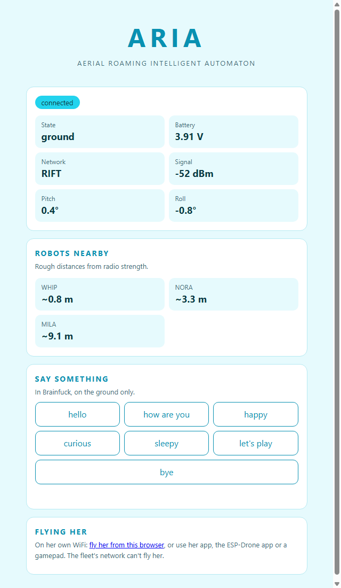
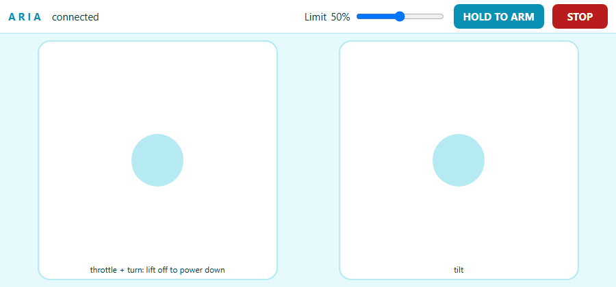

Overview
A drone that joins the fleet
ARIA is based on CF-Drone, the open flight firmware for her kit, with the fleet’s features added on top. CF-Drone gives her stabilised flight, a web remote and a debug console, and QGroundControl, ELRS or SBUS can fly her too. Her spare headers take a barometer, laser rangefinder, compass and optical flow sensor.
She hasn't arrived yet. Her firmware compiles for both chips and her link rules pass their tests on a PC, but it has never run on her and nothing here is flight-tested.
She joins, never hosts
She keeps her own WiFi for the app and joins the highest fleet network she can see, then registers with whoever hosts the list.
Phone, browser, pad
Her Android app, a page with two sticks, a gamepad or a flight stick: the same caps and failsafes whichever way.
The fleet can't fly her
The fleet can look at her and hear her; nothing in it can arm her. With her motors spinning she won't scan, join a network or chirp.
Brainfuck in light
The fleet's phrases as flashes of her LED, on the ground only. The kit has no buzzer.
Who's around
The fleet's ESP-NOW "I'm here" beacon twice a second, and she hears everyone else's: /near.
Cyan and white
Like clouds.
Hardware
The kit
| Part | Details |
|---|---|
| Kit | Diymore ESP32 Drone DIY Kit E1; on order: the CHERGLOW E1 Mini |
| Chip | Sold as an ESP32-S3 with 716 motors, but her manual and the open design say a plain 30-pin ESP32 with 8520 motors, so the chip gets confirmed when she arrives |
| Gyro | MPU6500 over SPI |
| Battery | 3.7 V single-cell LiPo, not included |
| Firmware | scripts/aria_flight (Arduino), for a plain ESP32 or an S3 |
| Licence | GPL-3.0 with CF-Drone's additional terms. Personal and non-commercial use is exempt; selling her firmware or hardware needs CHERGLOW's permission |
In the fleet
On top of CF-Drone
Her page and API
Her controller page (RIFT's Open button), GET /status (flying, battery, network, signal), /ping and /chirp?u=<0-16>. On the fleet's network she's also http://aria.local:5014.
She climbs too
Every minute she looks for a higher fleet network, but only on the ground with nobody on her own WiFi, so a scan can't cut the phone flying her.
Flying from a page
On her own WiFi, http://192.168.43.42:5014/fly has two sticks over a WebSocket. She refuses anyone on the fleet's network.
Her app
The same sticks and rules, over WIFI or BLUETOOTH. A gamepad or flight stick pairs with the phone, or plugs in over USB-C.
What she shows
Her app and page show battery, pitch, roll, signal and network, and each nearby robot with a rough distance (~, from radio strength).
Flying rules
The same whichever way she's flown
- She won't arm until she has seen thrust 0, and only from a low thrust. Holding 0 for 0.3 s disarms her.
- If the commands stop, she levels at 0.5 s and starts CF-Drone's controlled descent at 1 s.
- Tilt, yaw and thrust are capped in the firmware, whatever the app sends.
- CF-Drone's own protection stays on: no arming on a low battery or a failed gyro, landing on a critical battery, cutting out when upside down.
- Her stock remote page and debug console are still there, at
http://192.168.43.42on her own WiFiARIA.
When she arrives
With the propellers off
scripts\flash.ps1 -Backupsaves her factory firmware.scripts\flash.ps1 -Sketch aria_pin_finder, then WiFiARIA_PINSandhttp://192.168.4.1: it shows her chip, finds the gyro and battery, and pulses one pin at a time at 15% so you can see which motor is which.- If the pins differ from
board_config.h, change them there, or usep MOT_PIN_FL <pin>on the console. scripts\flash.ps1flashes her flight firmware, for whichever chip she has.- On the debug console:
cafor the six-side calibration,psto check it, thenmfl,mfr,mrl,mrrfor each motor. - Pair her app, arm with no propellers, and check each stick moves the right motors the right way before the first flight.
python scripts/fake_aria.py is a pretend ARIA on the PC, for trying the page and RIFT's link with no drone.
Controls
Keyboard, gamepad, flight stick
Her fly page
Enter held 1 s arms her (throttle down). W held is the throttle: let go and she powers down. A D turn, the arrows tilt, Space stops. Leaving the window disarms her.
Phone app
Right trigger is the throttle, left stick turns, right stick tilts, hold A to arm, B stops. If it disconnects, she disarms.
Phone app
The stick tilts, its twist turns, the lever is the throttle; hold the trigger to arm, button 2 stops. A lever stays where it's left, so bring it down before you let go.
Bluetooth
The fleet's one protocol, over BLE
A controller sends exactly the web request it would send over WiFi, one per line, and she asks her own web server and answers. Her boards have no Classic Bluetooth, so she carries it over Bluetooth LE (the Nordic UART service): fleet_bt.BtSession("ble:ARIA").
Only /status, /near, /ping and /chirp answer over it. Flying stays on her paired app (press PAIR in her first two minutes after power-up), and /chirp still refuses while she's armed.
Screens
Her pages


Windows app
A native window on ARIA's page
It opens ARIA's own hosted page in a window, so it always looks the same as the page. It remembers the address, and FIND looks on the fleet list of the network you're on. If ARIA doesn't answer, it says so and lets you change the address.